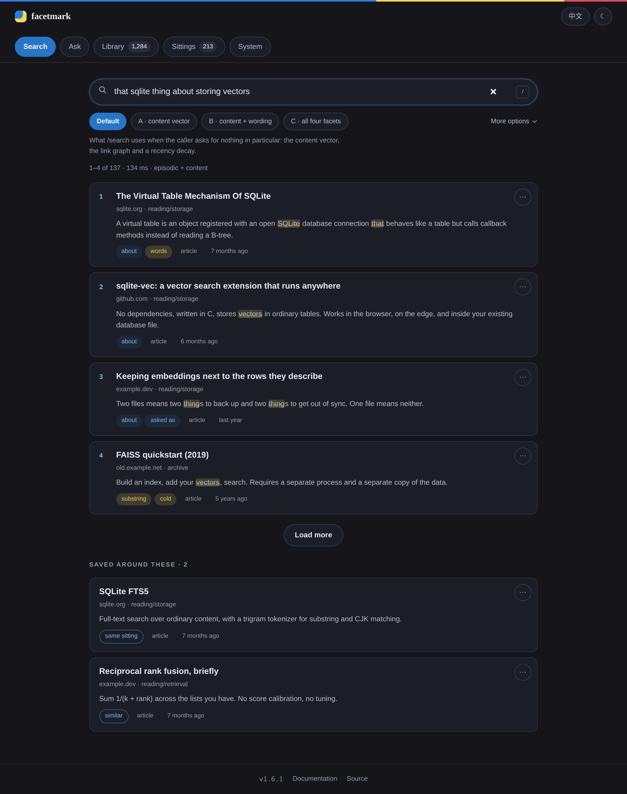
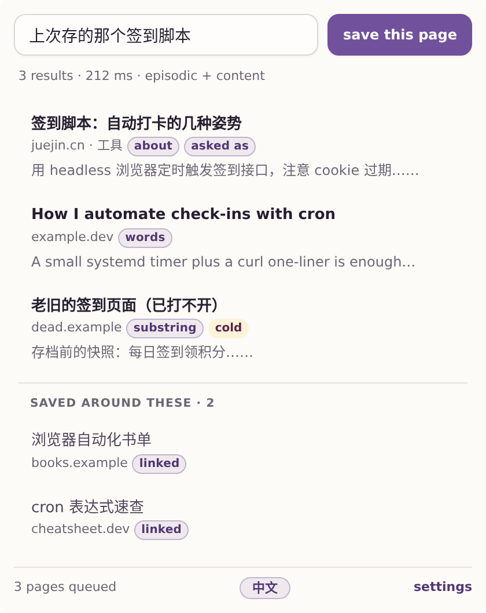
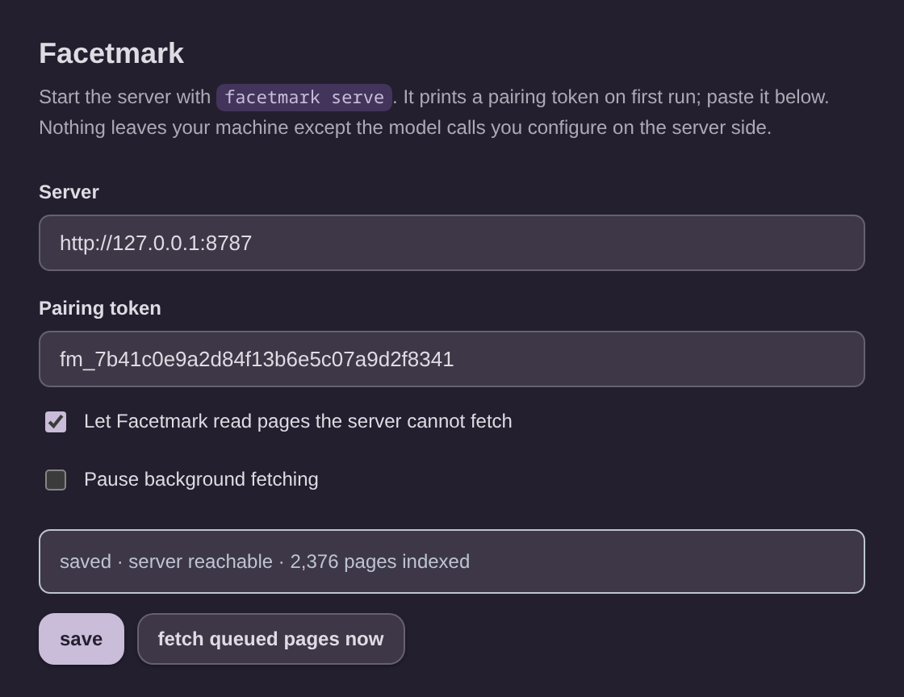

content-style
You remember the words
The page said sqlite-vec and shard and you want it back. Any decent index does this.
“sqlite-vec latency shard recall”
0.959
Recall@5
You saved it. You remember roughly what it was about, or why you wanted it, or what else you were reading that afternoon — just not the title. facetmark indexes all three of those and searches them together, against one SQLite file on your own machine.
facetmark demo, which builds a 60-page synthetic library offline. Provider is mock, so this is a plumbing check, not a quality measurement — the mock hashes text into vectors. The score column is not sorted because the rank comes from stage E and the score is the fusion score, which stage E deliberately does not overwrite.The problem
A folder tree answers the first one. It has nothing to say about the other two, which is why you end up scrolling history. These are the three query types the evaluation is built on, with the Recall@5 each one actually scored on a real 1,700-bookmark library.
The page said sqlite-vec and shard and you want it back. Any decent index does this.
“sqlite-vec latency shard recall”
You know what problem it solved. You never knew the product name, or you have forgotten it. Folder names are no help here; this is what the content embedding is for.
“that thing about keeping vectors next to the rest of my data without another server”
“The same afternoon I was reading about qdrant.” facetmark reconstructs saving sessions and a link graph to answer this — and it is still the weak spot. Published because it is true, not because it flatters.
“the other thing I saved around the same time as qdrant”
479 queries, one real library, config A. Full protocol and the rest of the table on the measured page.
How it works
facetmark builds four independent indexes over the same library and can fuse them with reciprocal rank fusion. Then it measured the fusion and found it worse than the single best facet, so the shipped default runs one facet. The other three are still there, still tested, one flag away — they are just not on, because the numbers said not to.
| Facet | What it indexes | Answers | Default |
|---|---|---|---|
| Lexical two FTS5 indexes | Character trigrams and word segments of the title, URL and body. | Exact strings, identifiers, code, error messages, and Chinese text that has no spaces to tokenise on. | off cost 5.4pp when fused |
| Content dense vector | An embedding of the extracted page body, not the title. | Paraphrase. The idea you remember when the words are gone. | on W1 winner, 0.643 |
| Intent generated queries | Candidate questions a model writes for the page, kept only if searching them actually retrieves the page back. | Why you would come looking, phrased the way you would phrase it later. | off 38% of intents plausible |
| Context sessions and graph | Save-session clustering, domain structure, and a link graph over the library. | “What did I save around that one?” | graph on gate off +2.09pp / −18.83pp |
Every one of those four verdicts links to a protocol, a query set and a confidence interval on the measured page.
The pipeline
Blue is what runs in the shipped default profile. Grey is built, tested and switched off. Every indexing stage is idempotent and fingerprinted, so facetmark index re-runs only the work whose input changed.
four facets, in parallelone of them is on by default
branches off the fusion step
shipped default pathbuilt, wired, off by default
bookmark → fetch → content → enrich (summary, topics, entities, key points) → embed → intents → filter → sessions → edges.
Enrichment is keyed on the body hash; embedding is keyed on the reconstructed embed text, so a vector that no longer matches its text is detected rather than trusted. --force ignores both.
One hop out from the fused hits, returned as a separate group rather than mixed into the ranking. Measured at +2.09pp, 10 wins and 0 losses, 9 ms.
The page you open
127.0.0.1:8787/appfacetmark serve prints a URL. Open it and you get the search box, the same markers on a result row that the extension uses, and a second view that tells you what your index actually contains. Nothing to install and nothing to build — the page ships inside the Python package and is served by the same process.

The token is fetched from a route that answers only when the caller and the address in the request are both loopback, so on your own machine there is nothing to copy. Anywhere else the page asks you to paste it once.
An empty library prints the import command. Bookmarks with no vectors print facetmark index. A search with no hits and a full fetch queue tells you that, instead of showing you an empty list and letting you guess.
One switch in the header, remembered between visits. Light, dark, or whatever your system is set to. / focuses the box, the arrow keys walk the results, Esc clears.
In the browser
Manifest V3. Host permissions are http://127.0.0.1:8787/* and http://localhost:8787/*. It reaches your own machine, pairs with a token, and never writes to your browser's bookmark store.




facetmark health says why.These are UI previews rendered against mock data, not screenshots of a real library — a real one would put somebody's browsing history on a public page.
Evidence
The interesting part of this project is not the features that worked. It is the ones that were built, pre-registered, measured, and then turned off — including one that had already shipped.
Three criteria were registered before the run. All three failed. Fusion cost 5.4 percentage points of Recall@5 and made queries 3.5× slower — 148 ms at p50 became 526 ms. The four-facet default was withdrawn the same day.
Two things did survive that run and are shipped: graph expansion as a separate result group (+2.09pp, 10 wins, 0 losses, p=0.0019) and the reranker on Recall@1 (+4.80pp, CI95 [+1.46, +8.35]).
Then there is the episodic gate. It won its holdout (+3.09pp, 19 wins, 0 losses, p=3.8e−6) and shipped. A 361-query probe set built afterwards to ask what it does when it fires on the wrong query answered −18.83pp, 3 wins against 71 losses. The default was reverted.
Quickstart
On a Chromium-family browser — Chrome, Edge, Brave, Vivaldi, Chromium, Opera — you do not even have to export first. facetmark import with no argument finds the live profile and reads it.
pip install facetmark
facetmark import # finds your browser profile; read-only
facetmark index # fetch, enrich, embed, sessions, edges
facetmark search "that post about keeping vectors in sqlite"No API key handy? facetmark demo builds a synthetic 60-page library offline and searches it, so you can see the shape of the output before committing anything.
sentence-transformers, and only if you want local embeddings.facetmark serve and use the browser extension, the HTTP API, or an MCP client.Interfaces
facetmark serve hosts a search page at /app. Search and a library overview, English or Chinese, light or dark. The only interface that needs nothing installed beyond facetmark itself.
Sixteen commands. search takes --explain to print which facet matched, and --config to run any ablation rung by name.
facetmark serve binds 127.0.0.1:8787. Twenty-seven routes. Four are open — the root, health, and the two the local page needs to load itself; everything that touches the library requires a pairing token.
facetmark mcp speaks MCP over stdio. Nine tools and three resources, so Claude Desktop can search your library and read a saving session.
MV3. Omnibox keyword fm, Ctrl+Shift+K, one-click save with a local indexing queue.
A search-provider plugin that puts facetmark behind karakeep's own search box. The wire contract is pinned by a replay test.
Questions
Two things leave your machine, both of which you control. Page fetching goes to the sites you bookmarked. Enrichment and embedding go to whichever OpenAI-compatible endpoint you configured — that can be OpenAI, or a box on your desk.
Set FACETMARK_EMBED_BACKEND=local and leave FACETMARK_API_KEY empty and nothing beyond page fetching leaves the machine at all. There is no facetmark server to talk to. There is no account.
No. Import is a one-way read. The importer opens the profile's Bookmarks file or your exported HTML, reads it, and closes it. Nothing in the codebase writes to a browser profile.
Nothing is deleted on the facetmark side either. The decay layer demotes stale pages in the ranking; it never removes a row.
Yes, and it will be worse, and it will tell you so. Without a model you keep both lexical facets and the whole session and domain graph. You lose the content facet — the one that measured best — and the intent facet.
A middle path: run a local embedding model for the content facet and skip the chat model. You lose enrichment summaries and generated intents, keep paraphrase search.
Dominated by enrichment: roughly one small chat call per page. On a cheap model, 1,700 pages costs cents. Embedding is cheaper still, and free if you run it locally.
Wall time is dominated by fetching, not by models. facetmark honours robots.txt and rate-limits itself per domain on purpose. --no-fetch indexes titles only and finishes in seconds.
Because four-facet fusion was measured on 479 real queries and came out 5.4 points of Recall@5 behind the content facet on its own, at 3.5× the latency.
The mechanism is written up: flat-weight RRF lets a coincidence on two weak facets (0.0279) outvote confidence on one strong facet (0.0164). The facets still exist and are still tested. --config C turns them all on if you want to see it for yourself.
No. It is a tool with an evaluation harness attached, and the harness is the point. Every default that changed has a protocol, a pre-registered criterion and a confidence interval behind it, and four of those protocols killed the feature that motivated them.
The largest missing piece is stated on the measured page: every query set so far was written by the author, which is the one bias no amount of bootstrapping fixes.
Boundaries
Import never writes back. Your folder tree is yours.
The cold layer demotes. It does not remove rows, and facetmark health shows you what it considers dead and why.
One SQLite file you can open with any SQLite browser. If you stop using facetmark your data is still readable.
robots.txt is honoured, per-domain concurrency is capped at 2, there is a minimum interval between hits on one host, and the user agent says what it is.
And no default change without a query set that was frozen before the run.
The guide covers install, all four browsers, both provider setups, the extension, MCP and the karakeep plugin. The measured page covers every retrieval claim in the project, including the ones that failed.